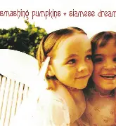
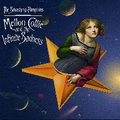
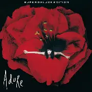

Discografía
Estos son algunos de los álbumes más representativos de esta banda, con enlace directo a YouTube para escuchar el disco completo.
Álbumes Destacados


Mellon Collie and the Infinite Sadness (1995)
Álbum doble que explora desde el grunge hasta el dream pop
Escuchar en YouTube
